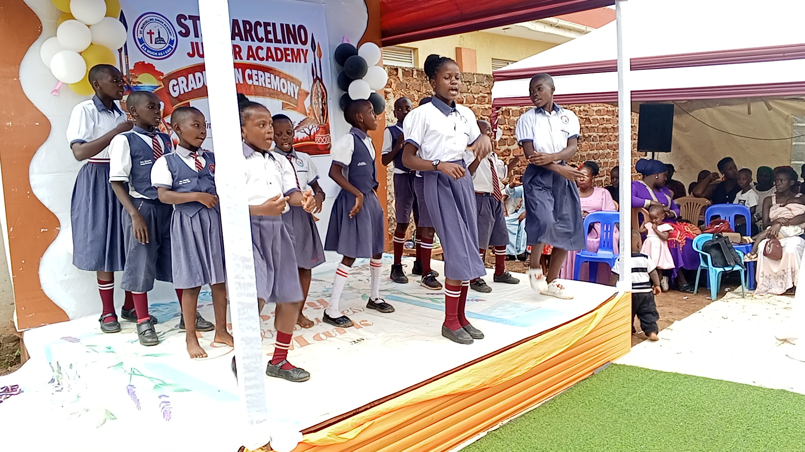

The Speech Day stage came alive as pupils performed with confidence, rhythm, and plenty of smiles. Families and friends gathered to cheer them on and celebrate the effort that went into each performance.
For the children, dance is more than a show: it is a chance to practise, work as a team, and take pride in sharing their talents with the community. The joyful performances made the day memorable for pupils and visitors alike.
Moments from the stage

